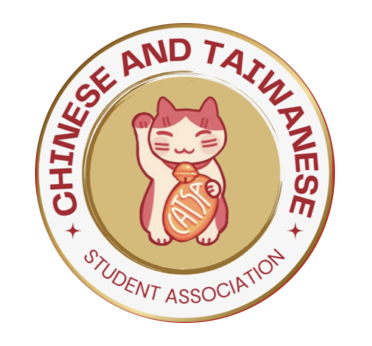

About Us
Hello! We are CATSA.
The Chinese and Taiwanese Student Association (CATSA) exists to create a vibrant space where students can celebrate, learn about, and share Chinese and Taiwanese cultures. Through cultural events, language exchanges, and community service, CATSA connects people from diverse backgrounds, fosters friendships, and promotes understanding on campus. Our mission is to celebrate heritage, support one another, and build bridges between cultures.